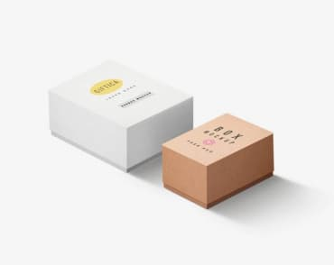
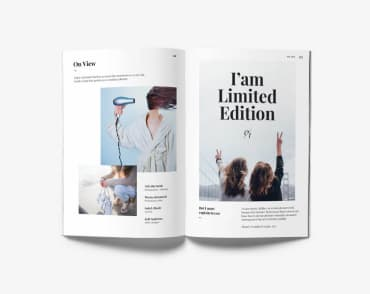
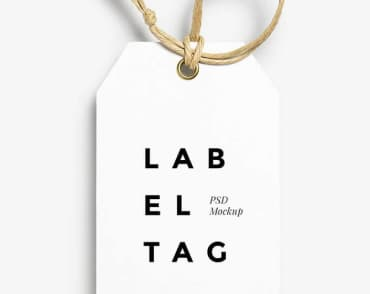

-
 Technocrack Strona internetowa
Technocrack Strona internetowa -
 Grafika New Orlean vs Golden Star Dizajn
Grafika New Orlean vs Golden Star Dizajn -
 Restauracja Seafood Aplikacja
Restauracja Seafood Aplikacja -
Projekt Prime Marketing
-
Projekt Boxes Aplikacja
-
 Inspiration has no Borders Strona internetowa
Inspiration has no Borders Strona internetowa -
Magazyn Limited Edition Dizajn
-
Projekt LAB Marketing
-
 Growing Business Aplikacja
Growing Business Aplikacja